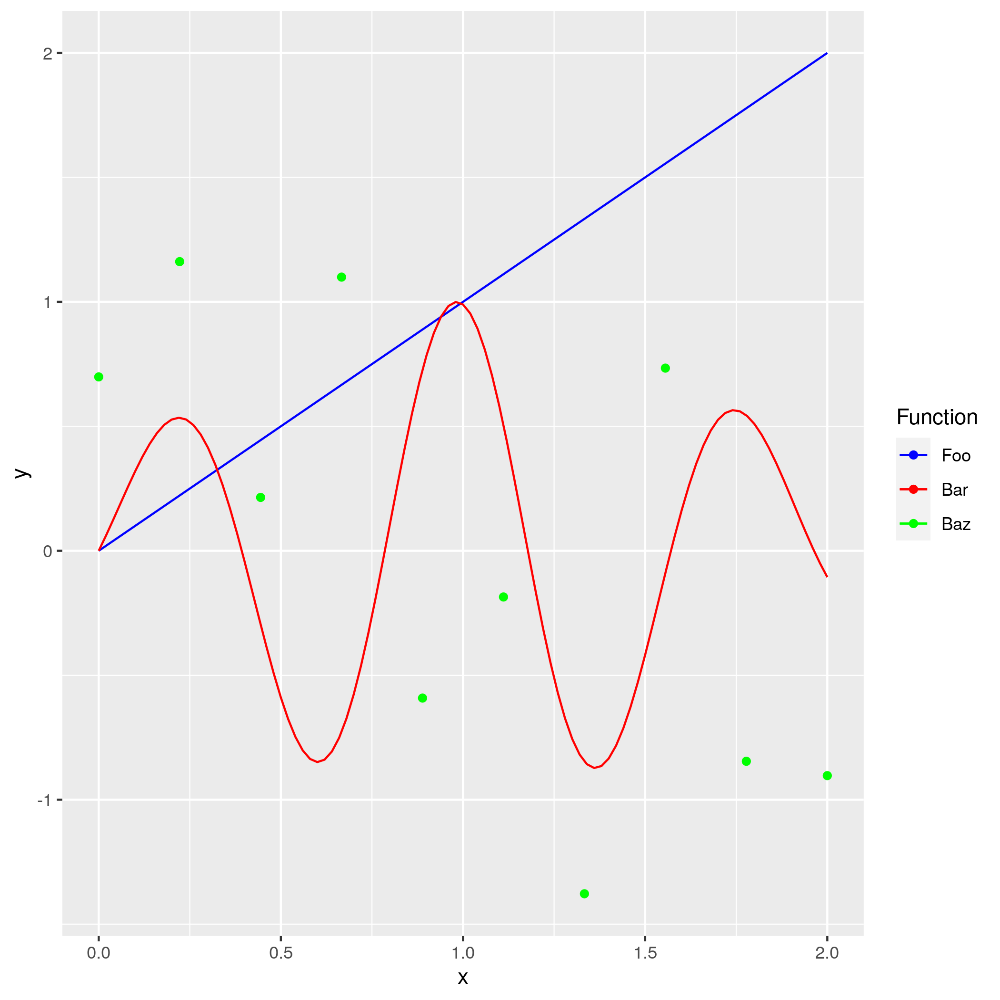

Table of Contents
ggplot2 notes


Examples
Using cowplot to get a grid of figures

library(ggplot2) library(cowplot) a <- ggplot() + geom_point(data = iris, mapping = aes(x = Sepal.Length, y = Sepal.Width, colour = Species)) b <- ggplot() + geom_point(data = iris, mapping = aes(x = Petal.Length, y = Petal.Width, colour = Species)) legend <- get_legend(b + theme(legend.box.margin = margin(0, 0, 0, 12))) example_plot <- plot_grid(a + theme(legend.position = "none"), b + theme(legend.position = "none"), legend, ncol = 3, rel_widths = c(1,1,0.25)) ggsave("../resources/ggplot2-example-01.png", example_plot, width = 14.8, height = 10.5, units = "cm")
To include latex in any sort of text on a figure there is the latex2exp
package on CRAN which provides the TeX function. You can wrap most strings in
this before passing to plotting code. The vignette for this package describes
the expressions supported and has multiple examples.
Map of Italy using spatial data

Depending on the machine set up you may need to use convert to change a PDF of this map to a PNG.
library(ggplot2) library(ggspatial) library(GADMTools) library(purrr) library(dplyr) library(reshape2) library(ggmap) ## Define some parameters for how to draw and colour the figure my_breaks <- c(0,5,10) my_cols <- hcl.colors(n = length(my_breaks) - 1, palette = "reds 3", alpha = NULL, rev = TRUE, fixup = TRUE) map_country_line_colour <- "#252525" map_inline_thickness <- 0.1 map_outline_thickness <- 0.5 map_plot_background <- element_rect(colour = "#252525", fill = "#FFFFFF") ## Load the map data from GADM italy_sf <- gadm_sf_loadCountries("ITA", level = 1)$sf italy_sf$foobar <- rpois(n = nrow(italy_sf), lambda = 3) ## Include an additional level zero object for the country outline. italy_outline_sf <- gadm_sf_loadCountries("ITA", level = 0)$sf g <- ggplot() + geom_sf(data = italy_sf, mapping = aes(fill = foobar), colour = map_country_line_colour, size = map_inline_thickness) + geom_sf(data = italy_outline_sf, fill = NA, colour = map_country_line_colour, size = map_outline_thickness) + scale_fill_gradientn(breaks = my_breaks, colors = my_cols, limits = range(my_breaks)) + theme(plot.background = map_plot_background) + labs(fill = "Foobar") + theme_void() + theme(legend.position = "left") ggsave("../resources/ggplot2-example-02.pdf", g)
Moving the legend around
To move the legend you use the legend.position in the theme.
library(ggplot2) g <- ggplot(data = iris, mapping = aes(x = Sepal.Length, y = Petal.Length, colour = Species)) + geom_point() + theme(legend.position = c(0.8,0.2)) ggsave("../resources/ggplot2-example-03.png", g)
Plotting mathematical functions

It's useful to be able to plot a function without having to set up a data frame
first. The solution is to use stat_function with the fun argument and geom
= "line". Note that the range of the independent variable is implicitly set
viat the data frame passed to ggplot().
library(ggplot2) g <- ggplot(data.frame(x = c(0, 2)), aes(x)) + stat_function( fun = identity, geom = "line", mapping = aes(colour = "Foo") ) + stat_function( fun = function(x) exp(-(x - 1)^2) * sin(x * 8), geom = "line", mapping = aes(colour = "Bar") ) + geom_point( data = data.frame( x = seq(0, 2, length = 10), y = rnorm(10) ), mapping = aes(colour = "Baz", y = y) ) + scale_colour_manual("Function", values = c("blue", "red", "green"), breaks = c("Foo", "Bar", "Baz") ) ggsave("../resources/ggplot2-example-04.png", g)
Annotation for a linear model

library(magrittr) library(ggplot2) library(latex2exp) x <- seq(from = 1, to = 7, length = 20) y <- rnorm(n = length(x), mean = x, sd = 1) z <- data.frame(x = x, y = y) rsquared <- lm(y ~ x, data = z) %>% summary %>% use_series("r.squared") annotation_exp <- TeX(sprintf("Linear model $R^2 = %.2f$", rsquared)) g <- ggplot(data = z, mapping = aes(x = x, y = y)) + geom_point() + geom_smooth(method = "lm") + annotate(geom = "text", x = 5, y = 2, label = annotation_exp) + coord_fixed() ggsave("../resources/ggplot2-example-05.png", g)